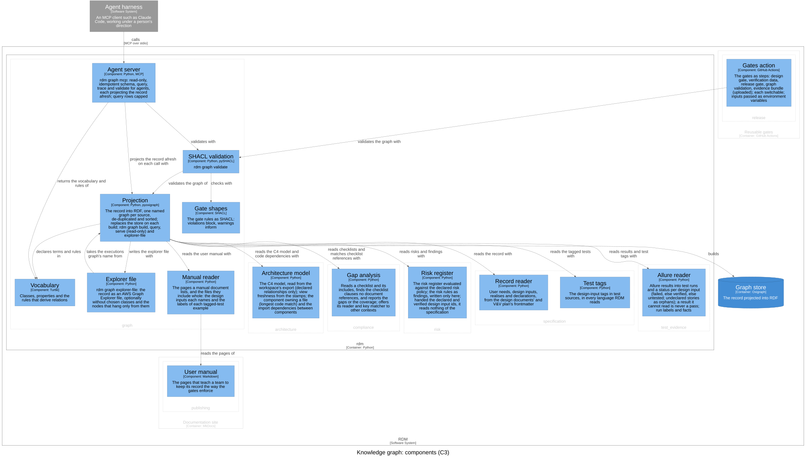

Knowledge graph — Software Design¶
Id: SDS-GRAPH-001 · Kind: design · Context: graph · Realises: DI-68 · Download as PDF
Design inputs¶
- DI-35 — RDM shall project the design record into an RDF dataset with one named graph per source: user needs (id, text), bounded contexts, design inputs (text, traced user needs, owning and realising contexts) and controlled documents (id, title, revision) in a record graph; verifying-test tags in a tests graph; executed Allure results, when given, in an executions graph; and each controlled document's latest git commit in a git graph; with an rdfs:label on every node and RDM's vocabulary in an ontology graph; written as sorted N-Quads, byte-identical across runs over an unchanged record.
- Traces to: UN-014
- DI-36 — RDM shall load the projected dataset into a persistent Oxigraph store that each run replaces rather than merges, answer SPARQL queries over that store (or over an in-memory projection when no store is given), and serve the store as a read-only SPARQL 1.1 HTTP endpoint whose default graph is the union of the named graphs, for graph browsers such as AWS Graph Explorer; the endpoint and the query command shall refuse SPARQL Update and federated SERVICE calls, so neither changes the store or reaches the network; the query command shall refuse FROM, which the union default graph would ignore, and neither command shall create a store that does not exist.
- Traces to: UN-014
- DI-37 — RDM shall add regulatory checklists to the graph on request, as data: each checklist — in rdm gap's text format, resolving includes and built-in names as rdm gap does, or an RDF file — becomes a SKOS collection of its own items that links the checklists it includes, and each item a clause with its key, description, standard (named by the key prefix), edition when the key names one, and nearest listed parent clause.
- Traces to: UN-014, UN-006
- DI-38 — RDM shall ship SHACL shapes expressing the gate rules over the graph — unaddressed user needs, design inputs without a passing run or with a failing one, and unreferenced checklist clauses as violations; untagged design inputs, references to undeclared ids and stray test tags as warnings — that block exactly the design inputs, user needs and whole-record findings the release gate blocks, and flag a checklist clause without a key or a standard as a violation.
- Traces to: UN-014, UN-003
- DI-39 — RDM shall write the projected graph as an AWS Graph Explorer graph file: every node of the record and every link between two such nodes, leaving out the vocabulary and type statements, optionally leaving out the nodes of chosen classes together with their links and with the nodes that hang only from them (left with no path to a node outside the test-run results), refusing a class to leave out that the graph does not have, and naming the served SPARQL endpoint as the file's connection, so that the whole traceability graph opens in Graph Explorer in one step.
- Traces to: UN-014
- DI-41 — RDM shall serve the design record to agents as an MCP server over stdio (rdm graph mcp) with four tools: schema (the vocabulary and the predeclared prefixes), query (SPARQL), trace (a user need or design input with its contexts, documents, tests and runs) and validate (the gate shapes' results), each answering from a projection rebuilt from the record on that call.
- Traces to: UN-015
- DI-42 — RDM's agent server shall offer no way to change the record or the graph, or to reach the network: query shall accept SELECT, ASK, CONSTRUCT and DESCRIBE and reject SPARQL Update and federated SERVICE calls, trace shall accept only id-shaped input or an id the record declares, and results shall be capped at a row limit, saying when they were cut.
- Traces to: UN-015
- DI-45 — RDM shall project the risk register into a risks graph — each risk with its category, STRIDE category, linked risks, hazard, situation, harm, scores, initial and residual level, residual decision (acceptable, accepted, needs acceptance, unacceptable, or not evaluated while a control lacks a passing test), status, controlling design inputs and acceptance — with SHACL shapes that block exactly the risks, and the register findings, the release gate blocks and warn on a risk still proposed, and the agent server's trace shall accept a risk id and list, for a design input, the risks it controls.
- Traces to: UN-016, UN-015
- DI-48 — RDM shall link each controlled document to the checklist clauses its [[...]] tags reference, using rdm gap's own key matching, so that a clause no document references is exactly a clause rdm gap reports missing.
- Traces to: UN-014, UN-006
- DI-49 — rdm graph validate shall run the shipped shapes and any user-supplied shape files over the projected graph, report each result with its severity, focus node and message, and exit non-zero on any violation; a shapes or checklist file that is missing or not RDF shall be reported as an error, never a traceback.
- Traces to: UN-014, UN-003
- DI-51 — For each controlled document, the graph shall record the commit on the default branch's first-parent history that landed its latest change — a merge, squash or direct commit — with that commit's author, and a shape shall warn when the change has not landed on the default branch.
- Traces to: UN-014, UN-015
- DI-52 — The graph shall link each user need to the document that declares it, and each risk to the document holding the risk policy it was evaluated against, and shall not link a design document to a design review, which the record does not say covered it.
- Traces to: UN-014, UN-015
- DI-53 — The graph shall carry each test run's steps — name, status and order, nested under their parent step — and its attachments, on the run or on a step — name, media type and file — and the agent server's trace shall list them with each run.
- Traces to: UN-014, UN-015, UN-004
- DI-54 — RDM shall project each executed Allure result's uuid, full name, start and end times, status message and trace, and parameters, and shall not project what the record already holds or what claims nothing about design controls: its labels as nodes, its links, a test case per history id, and container fixtures.
- Traces to: UN-014, UN-004
- DI-56 — RDM shall link each test run to the components it names: by a component label, the key of a component the C4 model declares, or by an output label, the component whose code holds the file it names; a component label naming no component of the model shall be a warning; and the agent server's trace shall list, for a design input, the source files its runs' output labels name.
- Traces to: UN-014, UN-015
- DI-58 — The graph shall link each bounded context to the controlled document whose contexts frontmatter declares it, with its part, each controlled document to the controlled documents its references frontmatter names, and shall not project the traceability matrix template, an output generated from the record; a shape shall warn on a bounded context no document declares once any document declares contexts, and validation shall fail on a reference to a document the record does not hold.
- Traces to: UN-014, UN-015
- DI-60 — The graph shall link each test run to the commit its commit label names, record the commit the record was built at and whether the run tested uncommitted changes, and a shape shall warn on a run tied to no commit and on a run that tested a commit other than the record's.
- Traces to: UN-014, UN-003
- DI-61 — The graph shall record each tagged test — a Python test function or method, including those a module-level mark tags, or the whole file where tags are read by pattern — defined in its test file and verifying the design inputs its tags name, link each test run to the test it ran through the result's full name, and, when runs are linked to tests, a shape shall warn on a tagged test with no run while other tests in its file ran, and on a run that exercises a design input its test does not claim.
- Traces to: UN-014, UN-004
- DI-62 — RDM shall declare in its vocabulary each relation the graph derives rather than stores, with the rule that derives it as a SPARQL CONSTRUCT — first, that a bounded context serves the user needs its owned and realised design inputs trace to; the agent server's schema shall list the rules, and when asked to infer, the projection shall add the derived facts in a separate inferred named graph and nowhere else.
- Traces to: UN-014, UN-015
- DI-67 — RDM shall project the C4 model into the graph: each element typed person, software system, container or component, with its name, technology, description and external flag; the element that contains it; the bounded context that owns each component; each relationship with its source, target, label and technology; each component's code; the component every projected source file belongs to (the longest matching code path); and, for a component whose code is Python, an import from its code into another component's as a dependency between the two, marking a component whose code holds no Python as one whose dependencies were not read; and, when given the unit tests' code coverage report, each component's lines its unit tests ran and lines measured, as properties of the component alone, linked to no run and no design input.
- Traces to: UN-017, UN-014
- DI-73 — RDM shall derive, by a rule its vocabulary declares, that a test run reaches each component the C4 model's declared relationships lead to, at any depth, from a component the run names, and that is not itself named; the record never states it, and a reached component is never taken for a named one.
- Traces to: UN-017, UN-014
- DI-77 — RDM shall project the user manual into the graph: each page that a controlled document of kind manual lists under pages, with the files the page includes whole, linked to that document; each design input the page names by its id; and each tagged-test example it shows, a fenced code block with an Allure story decorator, with the names of the labels the example writes; a listed page that does not exist shall be a warning; and the agent server's trace shall list, for a design input, the manual pages that name it.
- Traces to: UN-018, UN-014
- DI-78 — RDM's gate shapes shall warn on a tagged-test example in the user manual that writes no component label.
- Traces to: UN-018
- DI-69 — RDM's agent server shall show, in the trace of a design input, the components its runs name and, apart, the components they reach, each with its container and owning bounded context.
- Traces to: UN-017, UN-015
Purpose¶
This context owns the knowledge graph: the design record, with its test
runs, git history, risks, checklists and architecture, projected into RDF
for people and agents to query, browse and validate. It speaks of
projection (one source of the record turned into facts, one named graph
per source), the vocabulary (the classes and properties queries and agents
rely on: the published language), gate rules (shapes whose violations
block and whose warnings inform), and derived relations (facts a rule
infers, kept apart from what the record states). The graph is a read model:
the Markdown record and the tests stay the only authored source; the graph
is rebuilt from them on demand, never edited, and never the source of a
fact. It is open world: it states only what the record states, so a missing
rdm:verifies link means no tag was found, never unverified;
closed-world judgments are the gate rules' and the coded gates'. graph
names it in commands and code.
Design Outputs¶
The design outputs are this context's architecture, in the C4 model of the architecture workspace: its components, what each is responsible for, and how they relate. They name components, never source files or functions: the workspace maps each component to its code.

| Component | Responsibility | Meets |
|---|---|---|
| Manual reader | Reads the pages a manual document lists, and the files they include whole: the design inputs each names and the labels of each tagged-test example | DI-77 |
| Projection | Turns each source of the record into its own named graph, de-duplicated and in a stable order; writes sorted N-Quads; replaces the store on each build; answers SPARQL over the store or an in-memory projection; starts the read-only endpoint; adds checklists and inferred facts on request | DI-35, DI-36, DI-37, DI-45, DI-48, DI-51, DI-52, DI-53, DI-54, DI-56, DI-58, DI-60, DI-61, DI-62, DI-67, DI-73, DI-77 |
| Vocabulary | The classes and properties of the graph, and each derived relation with the rule that derives it; projected as the ontology graph | DI-35, DI-62 |
| Gate shapes | The gate rules as SHACL shapes: violations block exactly what the release gate blocks, warnings inform; plus the checklist data's own shapes | DI-38, DI-45, DI-51, DI-58, DI-60, DI-61, DI-68, DI-78 |
| SHACL validation | rdm graph validate: runs the shipped and any user-supplied shapes over the union of the named graphs, reports each result most severe first, and fails on any violation |
DI-49, DI-58 |
| Explorer file | Writes the record as an AWS Graph Explorer file, every record node whatever its IRI, optionally leaving out chosen classes and what hangs only from them | DI-39 |
| Agent server | rdm graph mcp: the schema, query, trace and validate tools for agents, read-only, each answering from a projection rebuilt on that call |
DI-41, DI-42, DI-45, DI-53, DI-56, DI-62, DI-69, DI-77 |
All six are in the rdm container, and need the optional extra graph;
without it every rdm graph command exits 2 and names the extra. The view
also shows the other contexts' components the Projection reads (see
Dependencies). Each design input is verified by a test tagged with it in
the acceptance suite.
How the components relate, in the direction of the arrows:
- The Projection declares its terms and rules in the Vocabulary, and
writes the explorer file with the Explorer file, which takes only the
executions graph's name from the Projection, never a second read of the
record. It builds the graph store, which the SPARQL endpoint serves
read-only to AWS Graph Explorer, its default graph the union of the named
graphs. The endpoint is RDM's own (
rdm graph serve), reading the store afresh for each query, so it serves the last build and refuses what the Agent server refuses. - SHACL validation validates the Projection's graph and checks it with the Gate shapes.
- The Agent server projects the record afresh with the Projection on each
call, derived relations included; validates with SHACL validation; returns
the Vocabulary and its rules for
schema; and checks thattraceinput is an id with the shared kernel. It never uses the graph store, so an agent never reads a stale graph. The agent harness calls it over MCP stdio; RDM's own repository registers it for its agents.
The behaviour a reviewer needs to judge the design:
- Named graphs. The record graph holds user needs, bounded contexts, design inputs and controlled documents, each user need's declaring document, each context's declaring document and part, and the documents' references; the tests graph holds the tagged tests; the executions graph the Allure results, when given; the git graph each document's latest landed commit and the commit the record was built at; the risks graph the register, with a finding about the register as a whole on each risk, or on a stand-in node for the register when it has none; the architecture graph what the C4 model claims and the code graph what the imports between components' code actually are; the checklists and references graphs, on request; the ontology graph the Vocabulary; and the inferred graph, on request, only what the rules derive and nothing else. The traceability matrix template is not projected: it is output, not record.
- Whole-record findings. What the release gate blocks about the record as a whole (a design control not met, no design input declared, a result file that cannot be read) goes on the record's node as the gate words it, and a shape blocks each one, so validation never passes what the gate blocks. The executions graph is read with the Allure reader the gates use. A declared id links its tests and runs whatever its shape; an undeclared tag links only when it is id-shaped.
- Order. The architecture is projected after the runs, because the
source files it places in components (
rdm:inComponent) are the ones the runs' output labels name. The code graph holds onerdm:Dependencyper importing pair of components, with one example importing and imported file, beside theirrdm:dependsOnlink. - Identity. Instance IRIs are
urn:dhf:<project>:<kind>/<id>, the project being the repository's name unless another is given, so graphs from several repositories merge without collisions; clause, standard and checklist IRIs (urn:rdm:clause:62304:5.6.2) are project-independent. - Vocabulary reuse. Standard terms are reused where they exist:
rdm:DesignInput rdfs:subClassOf oslc_rm:Requirement(OSLC Requirements Management), Dublin Core for identifiers, titles, descriptions and references, PROV-O for commits, authors and run times, SKOS for checklists. RDM terms (rdm:UserNeed,rdm:BoundedContext,rdm:Test,rdm:TestRun,rdm:Risk, the C4 classes,rdm:tracesTo,rdm:ownedBy,rdm:realises,rdm:verifies,rdm:exercises, …) are minted only where none fits. - What is refused. The Agent server's
query, the SPARQL endpoint andrdm graph queryrefuse SPARQL Update, anySERVICEcall outside literals, IRIs and comments (a comment ends at either line break), and anything that does not parse as a query, andFROMorFROM NAMED, which would be ignored (a query names a graph withGRAPH); a variable or prefix named SERVICE is not a call. The Agent server's row limit is capped. Every tool is annotated read-only and idempotent.traceanswers a user need, a design input (with its risks, runs, steps, attachments and source files) or a risk, and nothing that is neither id-shaped nor declared. SHACL validation exits 1 on a violation and 2 on a missing DHF or a shapes or checklist file that is missing or not RDF.--inferover a store and an--excludeclass the graph does not have are refused. The default branch is origin's HEAD, elsemainormaster, else git'sinit.defaultBranch, else the only local branch.
Realised for other contexts: the Projection and the Gate shapes implement
the graph's part of DI-46 (specification): each user need's and design
input's declaration count, and a shape on a repeated declaration. The Gate
shapes also realise DI-68 (architecture): a warning, never a violation, for
each way the C4 model and the record disagree, over the architecture and
code graphs and two facts the Projection adds for them (a component's code
path that does not exist; the views a design document shows). The
frontmatter declares DI-68 in realises, not yet DI-46. Realised by others: the
specification realises part of DI-61 (the scan of the test sources), and
the pytest plugin writes the commit labels DI-60 projects (DI-59).
The Agent server's trace of a design input names the components whose
code its tests' runs exercise, each with its container and owning bounded
context (DI-69).
Open questions:
- Whether the shapes replace the coded gates (RDM-004.06); until then the acceptance tests hold the two to agreement.
schema's list of named graphs and the Agent server's instructions do not name the architecture and code graphs (DI-67), though queries see them.
Commands and events¶
Each row: the actor issues the command, resulting in its success event or a fail event (the rule broken, after the slash), which affects the entity.
| Actor | Command | Success event | Fail events | Entity |
|---|---|---|---|---|
| CI or agent | Validate graph | Graph Valid | Graph Invalid / Gate Rule Violated | Knowledge graph |
The knowledge graph is a read model; a query or trace changes nothing.
Dependencies¶
A read model at the top layer (5) of the dependency rule: it depends on the
contexts below it, and nothing but the composition root depends on it in
code; the release context's gates action runs rdm graph validate as a CI
step, not as an import. It projects:
- specification, through the Record reader and the Test tags: needs, inputs, contexts, documents, declarations, tagged tests;
- test evidence, through the Allure reader: results and labels, and the verified set;
- risk, through the Risk register: the register, the policy, the residual decision and the release gate's findings;
- architecture, through the Architecture model: the C4 model, each file's component, the imports between components;
- compliance, through Gap analysis: the checklist reader, the built-in checklists and the key matcher;
- release, through the Release gate: its findings about the whole record, which the Projection puts on the record for the shapes;
and the shared kernel (ids, git history, frontmatter). It does not read publishing. No dependency breaks the rule.
Out of scope¶
Writing back: nothing the graph holds or derives changes the record. Pushing the graph to an external RDF store, versioning the vocabulary and gate shapes, and several projects in one graph are not yet in scope (see the system architecture).